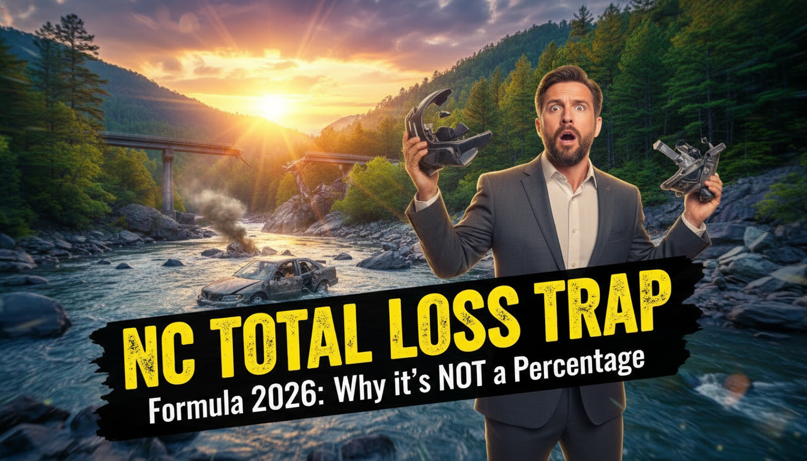

NC Total Loss Formula 2026: Why North Carolina Doesn't Use a Simple Percentage
North Carolina does not use a fixed "75% threshold" to declare a car totaled. Instead, NC uses the Total Loss Formula (TLF). A vehicle is considered a total loss if the Cost of Repairs + Salvage Value is greater than or equal to the Actual Cash Value (ACV) of the vehicle.
🏁 In a Hurry? Key Takeaways for NC Drivers
- The Math: Repairs + Scrap Value ≥ Car's Current Value = Total Loss.
- The Myth: Many people think if repairs are 75% of the value, it's totaled. In NC, that's not the law.
- The Decider: Insurance adjusters use current market data in your specific area (like Surry or Wilkes County) to determine value.
- The Age Factor: Older cars total easier because their "Salvage Value" is often a higher percentage of their (lower) ACV.
📖 Jump to Section
Imagine this: You're driving down North Bridge Street in Elkin, and suddenly—crunch. You’re okay, but your car has seen better days. You tow it to a body shop in Jonesville, and the mechanic says, "It looks bad, but we can fix it."
But then the insurance adjuster calls and says it's a total loss.
"Wait," you say. "The repairs are only $5,000 and the car is worth $8,000. That's not 75%!"
Welcome to North Carolina insurance law in 2026. Here, we do things a little differently. If you are Googling "NC total loss threshold," stop looking for a percentage. You need to look at the math.
The "Magic Math": Repair + Salvage ≥ ACV
Most states simply say, "If repairs cost more than X% of the car's value, it's toast." North Carolina uses a more dynamic equation mandated by the state.
Here are the three variables you need to know:
- Actual Cash Value (ACV): What your car was worth 10 seconds before the accident. (Not what you owe on it, and not what you paid for it 5 years ago).
- Cost of Repairs: The estimate to fix the vehicle to pre-loss condition.
- Salvage Value: What the wrecked car is worth to a scrap yard or parts recycler.

Comparison: Why NC's Formula is Different
Let's look at why a car might be repairable in Virginia but totaled here in Elkin.
| Variable | Simple 75% State | North Carolina (TLF) |
|---|---|---|
| Repair Cost | $7,000 | $7,000 |
| Salvage Value | $2,500 (Ignored) | $2,500 (Included) |
| The Math | 7,000 / 10,000 = 70% | 7,000 + 2,500 = $9,500 |
| Result | ✅ Repairable (Under 75%) | ✅ Repairable ($9,500 < $10,000) |
| Now, what if Salvage Value is higher? Say, $3,200? | ||
| New Math | Still 70% | 7,000 + 3,200 = $10,200 |
| New Result | ✅ Repairable | ❌ TOTAL LOSS ($10,200 > $10,000) |
📍 Why Geography Matters in the Yadkin Valley
Living in Elkin, Mount Airy, or Pilot Mountain affects your Salvage Value. If local scrap yards in Surry County have a high demand for parts for your specific truck (common with F-150s and Silverados here), the Salvage Value goes up.
Higher Salvage Value = Higher Chance of Total Loss.
"I thought my truck was fixable. But because the parts were so valuable locally, the math pushed it into a total loss. Bill explained the formula so I could actually understand the adjuster." — Sarah M., Dobson NC
🧮 NC Total Loss Calculator
Use this tool to estimate if your vehicle is likely a total loss under North Carolina law.
What To Do If Your Car Is Totaled
- Review the Valuation Report: The insurance company (ours or theirs) will send a market valuation report (often CCC One). Check it for errors. Did they list your leather seats? Your new tires?
- Locate the Title: You cannot get paid until you sign over the title. If you have a loan, the bank holds the title.
- Remove Personal Items: Don't forget the garage door opener or the tag (license plate)! In NC, you need the tag to turn in to the DMV to cancel your insurance and get a pro-rated tax refund.
- Ask about "Owner Retained": If you love the car, you can keep it. They will pay you the ACV minus the Salvage Value. You will then have a "Salvage Title" car that you must fix yourself.

Frequently Asked Questions
Is North Carolina a 75% total loss state?
No, North Carolina is not a strict 75% threshold state. While 75% is a common rule of thumb, NC law mandates the "Total Loss Formula," which considers the salvage value plus repair costs against the actual cash value.
Can I negotiate the Actual Cash Value (ACV)?
Yes, you can negotiate the ACV if you have proof. Provide the adjuster with recent sales data of comparable vehicles in your area (like Elkin, Dobson, or Mount Airy) or receipts for recent major upgrades (engine, transmission) to argue for a higher value.
What happens to my license plate after a total loss?
You must remove your license plate (tag) from the vehicle. In NC, you must turn this tag into the NCDMV to cancel liability coverage without a fine. You may also be eligible for a pro-rated property tax refund from the county.
Does the insurance company pay off my loan?
The insurance company pays the ACV to the lienholder first. If you owe more than the car is worth, you are responsible for the difference unless you have GAP insurance.
1. North Carolina Department of Insurance (NCDOI) - Consumer Guides
2. NC General Statute § 20-279.21 (Motor Vehicle Laws)
3. North Carolina Reinsurance Facility (NCRF) Manuals
Confused by the Adjuster's Math?
You don't have to figure this out alone. At Bill Layne Insurance, we've been helping folks in the Yadkin Valley for over 20 years.
📞 Call Bill: 336-835-1993or Email Us
Read More from Bill Layne
Bill Layne has served Elkin and the surrounding counties (Surry, Yadkin, Wilkes) for over 20 years. He specializes in finding the sweet spot between great coverage and affordable rates. When he's not at the office on N Bridge St, he's helping neighbors navigate the complex world of NC insurance laws.